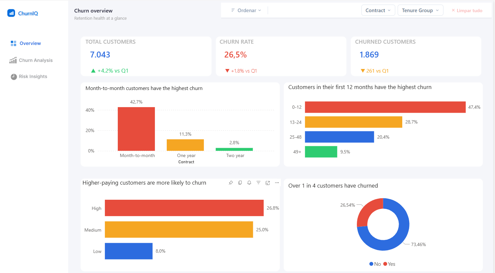

A telecom customer analysis focused on identifying churn drivers and recommending data-driven retention strategies.

Customer churn is one of the main challenges for telecom companies, especially in subscription-based models where retention directly affects revenue and sustainable growth.
In this context, simply knowing how many customers left is not enough. The most important question is understanding who is leaving, when it happens and which customer characteristics are most associated with churn risk.
The goal of this project was to analyze customer behavior and identify the main factors associated with churn, creating a clear view of vulnerable customer groups and possible retention actions.
The analysis was guided by three core questions: what is the current churn level, which factors influence cancellation the most, and what actions can be taken to reduce this risk.
The first step was to explore the data using SQL, analyzing overall churn distribution, behavior by contract type, customer tenure, monthly charges and payment method.
Then, I developed a Power BI dashboard structured into three pages: overview, churn driver analysis and risk segmentation with recommendations. The goal was to create a simple executive narrative connecting metrics, behavioral patterns and business actions.
The combination of customer tenure and contract type showed that customers within 0 to 12 months on month-to-month contracts represent the most critical group in the analysis.
On the other hand, customers on two-year contracts showed very low churn rates, reinforcing the relationship between contract commitment and customer retention.
This case turns a churn dataset into a practical business view, showing not only the volume of cancellations but also the customer profiles with higher risk and the most relevant retention actions.
The result is a decision-oriented dashboard focused on clarity, prioritization and business impact.
View full dashboard